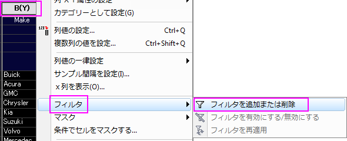
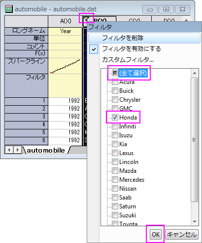
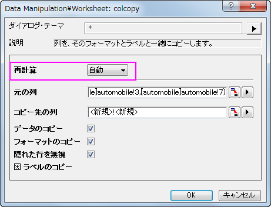
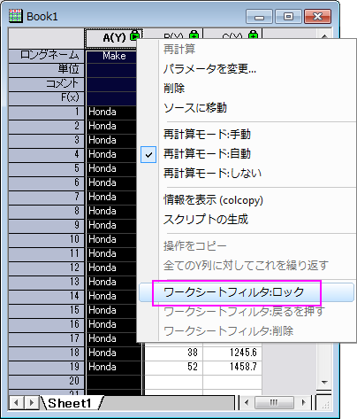

分析におけるフィルタロック
Lock-Filter
サマリー
通常、フィルタを使用してデータの分析を行った場合、元のワークシートのデータのフィルタ条件を変更すると、分析結果やグラフの再計算が実行されます。
しかし、列をコピーとピボットテーブルには、再計算の鍵アイコンのコンテキストメニューに3つのワークシートフィルタオプションが存在します。これらのオプションは、解析実行後のデータフィルタ条件変更を反映するかどうか制御できます。
必要なOriginのバージョン:Origin 9.1 SR0
学習する項目
- 新しいワークブックまたはワークシートに列をコピーする
- コピーした列のデータフィルタ条件をロックする
- ソースワークシートにデータフィルタ条件を戻す
ステップ
- <Originプログラムフォルダ>\Samples\StatisticsにあるOriginのサンプルファイルautomobile.dat をインポートします。
- Make列を選択後に右クリックし、フィルタ：フィルタを追加または削除をコンテキストメニューで選択します。あるいは、ワークシートデータ操作ツールバーのフィルタボタンをクリックします。

- Hondaのデータのみを表示するには、列の1行目のセル左上に表示されるフィルタアイコン
 をクリックします。全て選択をクリックして全てのチェックを外します。Hondaを選択します。OK ボタンをクリックします。
をクリックします。全て選択をクリックして全てのチェックを外します。Hondaを選択します。OK ボタンをクリックします。

- 列を別のワークシートにコピーするには、Ctrlキーを押しながらMake、Power、Engine Displacement列をクリックして選択します。そして、選択した列上で右クリックし、ショートカットメニューから列をコピーを選択します。
- colcopyダイアログで、再計算ドロップダウンリストから自動を選択します。コピー先の列が同じワークブックの新しいワークシートに設定されていることを確認してください。列をコピーした新しいワークシートが作成されます。

- コピーしたワークシートのタブを空欄になっているOriginのワークスペースにドラッグします。この操作で、新しいワークブックが作成されます。これにより、コピーしたデータと元のデータを横に並べて比較することができます。
- コピーした列1行目にある左上の再計算を示す緑色のロックアイコンをクリックします。コンテキストメニューでワークシートフィルタ：ロックを選びます。これでフィルタ条件を保存することができます。

- もとのワークシートで、Power列にフィルタを追加します。フィルタアイコンをクリックしてより大きいを選択します。ダイアログで値を100に設定し、OKボタンをクリックします。元のワークブックではPower列が100よりも大きい値しか表示しませんが、コピーしたワークシートではフィルタがロックされているため、更新はされなくなります。
- 元のワークブックのフィルタ条件は変更されましたが、それをコピーしたときの条件に戻すには、戻すというオプションを使用します。操作としては、コピーしたワークシートで列Aのヘッダに表示された緑の鍵のアイコンをクリックし、ワークシートフィルタ戻すをコンテキストメニューから選びます。これで、コピーした時のフィルタ条件が元のデータに戻され、Power列で設定した条件は反映されなくなります。
 |
ロックフィルタオプションは新しいシートにのみ有効です。同じワークシートに列をコピーしても、鍵のアイコンをクリックして開くコンテキストメニュー内にこれらのオプションは表示されません。
|